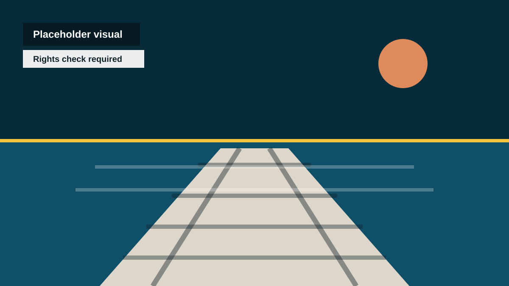
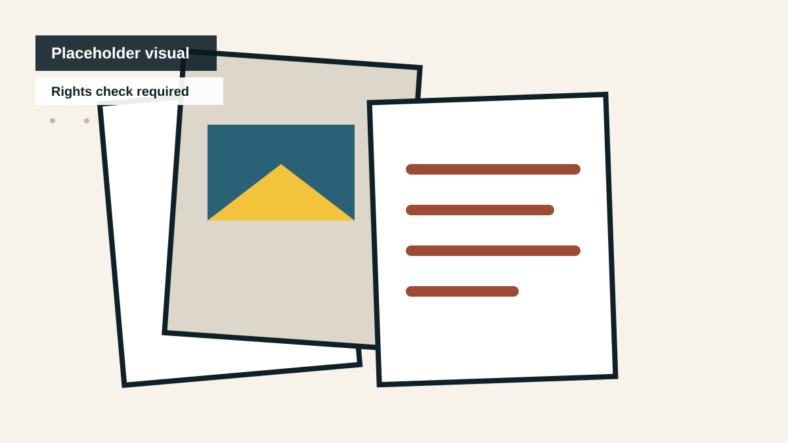

Beach
Rights check requiredForeshore, light, water, walking, summer memory, weather.
Image Library
Use this gallery as the public asset map. These are placeholder visuals only; final images need rights, consent, captions, and approval before public use.
Categories
Visual status: placeholder graphics are safe to display. Real photographs, student work, public art images, community images, and exchange material remain pending permission.
Foreshore, light, water, walking, summer memory, weather.

Arrival, lookout points, dusk, fishing, horizon, civic postcard moments.

Movement, daily commute, youth routes, urban edges, wayfinding.

Classroom-safe images, student work examples, teacher pack visuals.

Local memory, old postcards, family-safe archive items, then-and-now prompts.

Murals, sculptures, walls, artist process, QR-ready sites.

Frankston and Susono exchange visuals, used only after review and permission.

Libraries, markets, makers, workshops, local families, public sessions.
Create an approved image folder with captions, owner, permission status, and alt text for each image.
This page is intentionally useful before the assets are finished. It shows what is missing without faking a complete media library.